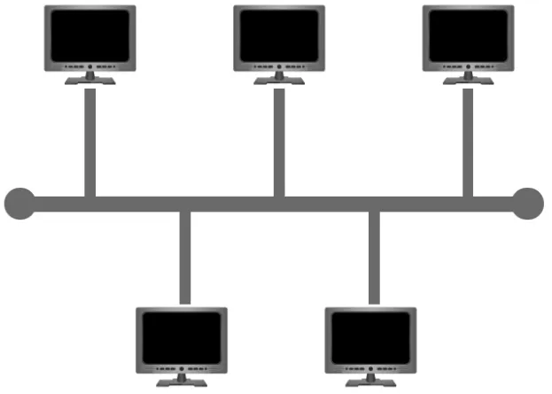

This type of connection relies upon a single connection which is known as a backbone cable. This type of topology is similar to the leaf off of a tree in the sense that devices (leaves) stem from where the branches are on this cable.
Because all data destined for each device travels along the same cable, it is very quickly prone to becoming slow and bottlenecked if devices within the topology are simultaneously requesting data. This bottleneck also results in very difficult troubleshooting because it quickly becomes difficult to identify which device is experiencing issues with data all traveling along the same route.
